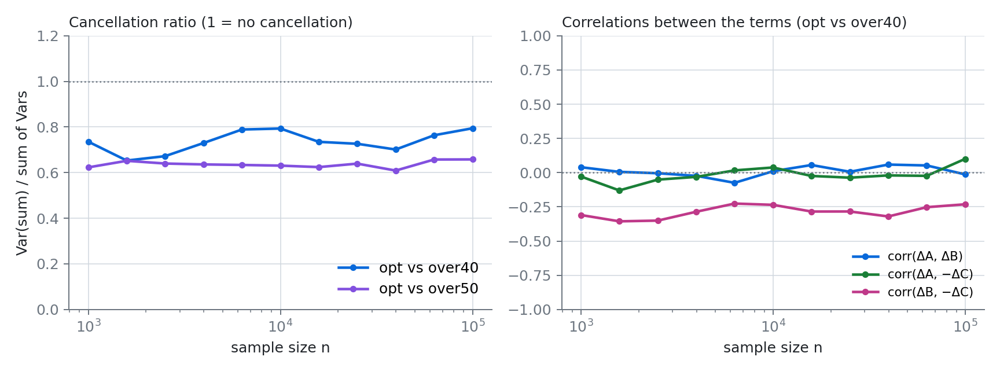
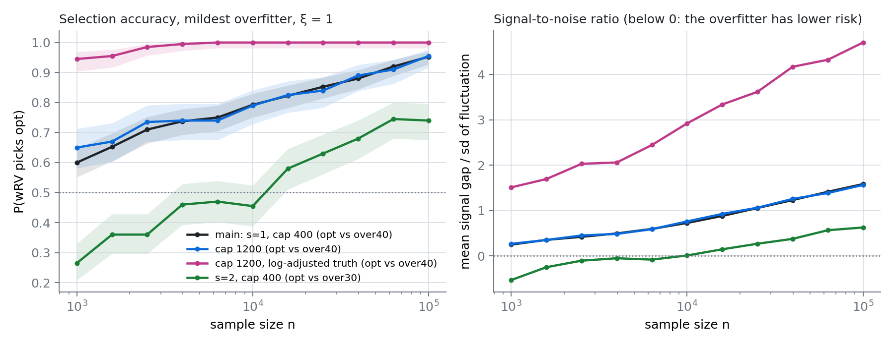

AI-assisted research draft · November 2026 · Expert review and novelty assessment pending
Abstract
Can rolling validation distinguish a good regression model from one that uses slightly too many terms? Zhang and Lei’s general stability theorem leaves a natural projection-estimator case unresolved. We investigate it through simulations, exact variance calculations, and a direct proof. Selection improves over the tested sample sizes, and error terms partly cancel. Our draft proof establishes consistency for bounded projection estimators under a positive noise-variance condition, without using cancellation. The result is specific to this setting; its novelty remains under review.
1The question
Suppose observations arrive one at a time. At each step, several regression models predict the next observation using only the past. Weighted rolling validation (wRV) selects the model with the smallest weighted sum of prediction errors:
\[ \mathrm{RV}_n(f)=\sum_{i=n_0+1}^{n}i^\xi\bigl(\hat f_{i-1}(X_i)-Y_i\bigr)^2,\qquad \xi\ge0. \]The fit \(\hat f_{i-1}\) uses observations 1 through \(i-1\); point \(i\) is held out until its prediction is scored. Larger \(\xi\) gives later predictions more weight. Our main experiment uses \(\xi=1\).
Overfitting can be mild and consistent
We study orthogonal series regression: approximate \(f_0\) by its first \(J(m)\) basis functions after \(m\) training observations. For smoothness \(s\), the usual squared-bias and variance orders are \(J^{-2s}\) and \(J/m\). Balancing them gives \(J_g(m)\asymp m^{1/(2s+1)}\). A sequence \(J_h(m)\asymp m^\alpha\), with \(1/(2s+1)<\alpha<1\), uses too many terms: its risk still vanishes, but more slowly.
Zhang and Lei’s theorem requires a strict stability inequality, \(b_h>\tfrac12+\tfrac{a_h}{2}\). For this overfitting sequence, their rates give
\[ b_h=1-\alpha/2=\tfrac12+\tfrac{1-\alpha}{2},\qquad a_h=1-\alpha. \]The condition holds only at equality, so their theorem is inconclusive. The authors suggest that cancellation between error terms may explain why wRV nevertheless works in simulations.[1] Lei’s later stability treatment retains this obstruction.[2]
Does the original wRV selector consistently reject this overfitting projection estimator? If it does, is cancellation necessary?
2Study design
Generate independent observations \(X\sim\mathrm{Uniform}[0,1]\), \(Y=f_0(X)+\varepsilon\), with independent noise \(\varepsilon=\pm1\) of equal probability. Use the orthonormal trigonometric basis
\[ \phi_0=1,\qquad \phi_{2k-1}(x)=\sqrt2\cos(2\pi kx),\qquad \phi_{2k}(x)=\sqrt2\sin(2\pi kx). \]Each fit uses sample-average coefficients, rather than an empirical least-squares fit:
\[ \hat\theta_{j,m}=\frac1m\sum_{t=1}^mY_t\phi_j(X_t),\qquad \hat f_m(x)=\sum_{j<J(m)}\hat\theta_{j,m}\phi_j(x). \]For the main run, \(s=1\), \(\theta_0=0\), and the retained sine and cosine coefficients at frequency \(k\) equal \(0.65k^{-3/2}\).
The truth has 400 coefficients, and \(J(m)=\min\{\lceil m^a\rceil,400\}\).
We compare opt (\(a=1/3\)) with over40 (0.40), over50 (0.50), and under20 (0.20).
Scoring begins after 100 training points. The run has 400 independent trajectories, each to \(n=100{,}000\).
Candidates share each trajectory, allowing paired comparisons. We also compute weights \(\xi=0,2\).
Separate signal from fluctuation
For one candidate, let \(D_i(x)=\hat f_{i-1}(x)-f_0(x)\), \(r_i=\mathbb E_X[D_i(X)^2\mid\mathcal F_{i-1}]\), and \(\mu_i=\mathbb E[r_i]\). Here \(\mathcal F_{i-1}\) contains the past observations and \(X\) is a fresh point. The score decomposes exactly as
\[ \begin{aligned} \mathrm{RV}_n={}&\sum_i i^\xi\varepsilon_i^2+\sum_i i^\xi\mu_i+A+B-C,\\ A={}&\sum_i i^\xi\bigl(D_i(X_i)^2-r_i\bigr),\\ B={}&\sum_i i^\xi(r_i-\mu_i),\qquad C=2\sum_i i^\xi\varepsilon_iD_i(X_i). \end{aligned} \]For a comparison, write \(\Delta=\text{alternative}-\text{opt}\). The pure-noise term cancels, leaving an expected score gap (the signal) plus \(\Delta A+\Delta B-\Delta C\). The terms \(A\) and \(C\) are martingale sums; \(B\) carries the dependence between successive fits.
Orthonormality gives exact conditional and expected risks:
\[ r_i=\sum_{j<J}(\hat\theta_{j,i-1}-\theta_j)^2+\sum_{j\ge J}\theta_j^2, \qquad \mu_i=\frac{\sum_{j<J}V_j}{i-1}+\sum_{j\ge J}\theta_j^2, \]where \(V_j=\operatorname{Var}(Y\phi_j(X))\). This avoids a separate Monte Carlo calibration bank.
Implementation checks
In the main run, the basis orthonormality error was about \(7\times10^{-15}\), and a from-scratch refit agreed with running-sum predictions to about \(3\times10^{-15}\). Recombining the score terms gave relative error below \(5\times10^{-15}\). The Monte Carlo mean conditional risk divided by its exact expectation ranged from 0.97 to 1.02. These checks test scaling, leakage, decomposition, and centering; they do not establish the asymptotic theorem.
3What the experiments show
Selection improves, slowly for mild overfitting

Against over40, selection of opt rises from 0.60 at \(n=1{,}000\) (95% interval 0.55–0.65)
to 0.953 at \(n=100{,}000\) (0.93–0.97). Selection against over50 and under20 is nearly perfect over this range.
At \(n=100{,}000\), the over40 comparison gives 0.980, 0.953, and 0.915 for \(\xi=0,1,2\): heavier weighting does not help in this design.
Cancellation is measurable, but modest

In the main over40 comparison, the combined variance is about 65–80% of the sum of separate variances.
The reduction comes mainly from a negative correlation between \(\Delta B\) and \(-\Delta C\).
The ratio is roughly stable over the tested range; finite experiments do not establish that it stays constant asymptotically.
The exact covariance calculation explains the connection. Noise that happens to align with the larger model’s extra terms lowers its prediction score at that point. Once the point enters training, the same noise perturbs those coefficients and contributes to later conditional-risk variation. This shared-observation term accounts for at least 97% of the calculated covariance in the checked comparisons.
A separate 10,000-trajectory run to \(n=3{,}000\) checks the formulas: simulated B standard deviations differ from exact values by at most 2.2%, and B–C correlations by less than 0.03. The formulas are for the finite simulation model, not a universal covariance identity for every noise distribution.
The signal grows faster in the main comparison

opt versus over40, \(\xi=1\), fitted slopes over the last five checkpoints are 1.60 for the signal and 1.28 for the combined fluctuation.The component standard-deviation slopes are approximately 1.00 (\(\Delta A\)), 1.24 (\(\Delta B\)), and 1.27 (\(\Delta C\)). This suggested a direct proof: perhaps each fluctuation can be controlled without relying on cancellation. These finite-sample slopes motivated the argument; they are not its justification.
Robustness checks and the smoother-truth surprise
Three additional settings use 200 trajectories each, again to \(n=100{,}000\).
| Setting | Alternative | Selection of opt: 1,000 → 100,000 |
|---|---|---|
| Main: \(s=1\), cap 400 | over40 | 0.600 → 0.953 |
| Cap 1,200 | over40 | 0.650 → 0.955 |
| Cap 1,200; log-adjusted coefficients | over40 | 0.945 → 1.000 |
| Smoother truth: \(s=2\), cap 400 | over30 (\(a=0.30\)) | 0.265 → 0.740 |
The log adjustment divides coefficients by \(1+\log k\), making the corresponding infinite series have finite Sobolev norm at the declared smoothness. Larger cutoffs give similar conclusions in the tested range.

The smoother-truth run initially selects over30 more often than opt.
An exact calculation shows that the expected cumulative score favors over30 until about \(n=9{,}844\) for \(\xi=1\).
Current-risk rankings switch 16 times before about 32,800 training points because the rounded model dimensions grow in jumps.
Thus “rate-optimal” does not mean best at every finite sample size. Current risk and cumulative weighted risk must be checked separately.
4A direct consistency proof
The general theorem controls the conditional-risk term B through estimator stability, and its sufficient condition fails at equality. Our proof instead uses the projection estimator’s squared-coefficient structure to bound B directly. The original stability exponent is unchanged.
Observe i.i.d. pairs \(Y=f_0(X)+\varepsilon\), with \(\mathbb E[\varepsilon\mid X]=0\). Assume \(|Y|\le M\), \(\operatorname{Var}(\varepsilon\mid X)\ge\sigma^2>0\), and a uniformly bounded orthonormal basis in \(L^2(P_X)\), with \(f_0=\sum_j\theta_j\phi_j\) and \(\sum_jj^{2s}\theta_j^2\le R^2\), \(s>1/2\). Use sample-average projection coefficients, uncapped dimensions \(J_g(m)=\lceil m^\beta\rceil\), \(J_h(m)=\lceil m^\alpha\rceil\), and a fixed burn-in \(n_0\ge1\). If \(0<\beta<\alpha<1\) and \(2s\beta+\alpha>1\), then for each fixed \(\xi\ge0\),
\[ \Pr\{\mathrm{RV}_n(h)\le\mathrm{RV}_n(g)\} \le C\bigl(n^{-\alpha}+n^{-(1-\alpha)}\bigr)\longrightarrow0. \]The constant \(C\) does not depend on \(n\). For \(\beta=1/(2s+1)\), the condition is exactly \(\alpha>\beta\).
The positive lower bound on noise variance is an added condition: it guarantees that sufficiently many extra coefficients impose a genuine variance cost. The theorem concerns the original wRV selector and uncapped sequences. It is separate from the capped simulation experiment.
Why the B term is smaller than the signal
Let \(\delta_{j,m}=\hat\theta_{j,m}-\theta_j\) and \(I_m=\{J_g(m),\ldots,J_h(m)-1\}\). Orthonormality gives the conditional risk difference
\[ d_m=\sum_{j\in I_m}(\delta_{j,m}^2-\theta_j^2). \]There are about \(m^\alpha\) extra coefficients. The signal satisfies \(\mathbb E d_m\ge c m^{\alpha-1}\) for large \(m\): the extra variance dominates the removed bias. For the fluctuation, a fourth-moment expansion and Bessel’s inequality give
\[ \operatorname{Var}(d_m)\le C\left(\frac{|I_m|^2}{m^3}+\frac{|I_m|}{m^2}\right) \le C m^{\alpha-2}. \]The key is the linear second term. Coefficient errors are not independent, but the sum of their squared covariances is bounded by a constant times \(|I_m|\), rather than \(|I_m|^2\). Consequently, even allowing perfect dependence between successive training times,
\[ \operatorname{sd}(\Delta B_n)\le\sum_{i=n_0+1}^n i^\xi\operatorname{sd}(d_{i-1}) \le C n^{\xi+\alpha/2}. \]The full score gap is \(S_n+\Delta B_n+\mathcal M_n\), where \(S_n\ge c n^{\xi+\alpha}\) is the signal and \(\mathcal M_n=\Delta A_n-\Delta C_n\) is a martingale. Fourth-moment bounds yield
\[ \operatorname{Var}(\mathcal M_n)\le C\left(n^{2\xi+\alpha}+n^{2\xi+3\alpha-1}\right). \]Chebyshev’s inequality now gives the theorem’s error bound. For \(\alpha>1/2\), the second martingale bound can dominate, but its standard deviation is still smaller than the signal because \(\alpha<1\). No covariance cancellation is required.
Read the full proof (PDF) · LaTeX source
The argument has received AI review and numerical checks, not formal verification or documented expert review. A targeted literature search found no matching resolution; novelty is not established. This does not settle the boundary for arbitrary estimators.
Technical details: exact B variance and B–C covariance
The following covariance calculation uses the simulation’s independent symmetric noise \(\varepsilon=\pm\sigma\). It is a separate finite-model result; the consistency theorem above allows more general conditional mean-zero noise.
Exact variance of the paired B term
For this projection estimator, the paired B term has a finite-sample variance formula. Write \(Z_{t,j}=Y_t\phi_j(X_t)-\theta_j\), \(\bar Z_{m,j}=m^{-1}\sum_{t=1}^mZ_{t,j}\), and let \(I_m=\{J_g(m),\ldots,J_h(m)-1\}\) be the band included only by the larger model. The deterministic bias difference disappears after centering, giving
\[ \Delta B_n=\sum_{m=100}^{n-1}(m+1)^\xi \left(\sum_{j\in I_m}\bar Z_{m,j}^2- \mathbb E\sum_{j\in I_m}\bar Z_{m,j}^2\right). \]Define \(\Gamma_{jk}=\mathbb E[Z_jZ_k]\), \(G_{IJ}=\sum_{j\in I,k\in J}\Gamma_{jk}^2\), and
\[ K_{IJ}=\sum_{j\in I,k\in J} \left(\mathbb E[Z_j^2Z_k^2]-\Gamma_{jj}\Gamma_{kk}-2\Gamma_{jk}^2\right). \]Expanding fourth moments of independent, centered observations gives, for \(m\le\ell\),
\[ \operatorname{Cov}\left(\sum_{j\in I}\bar Z_{m,j}^2, \sum_{k\in J}\bar Z_{\ell,k}^2\right) =\frac{K_{IJ}}{m\ell^2}+\frac{2G_{IJ}}{\ell^2}. \]To see the coefficients, the fourth cumulant has \(m\) contributions from a single shared observation, and the two cross-pairings each have \(m^2\) contributions. Dividing by \(m^2\ell^2\) yields the formula. This allows different, overlapping bands and correlated coefficients.
The exact variance is obtained by weighting and summing these covariances over all pairs of training times, including the diagonal.
exact_b_variance.py computes the required moments by deterministic quadrature and groups equal bands to avoid a quadratic loop over times.
| Weight | Exact sd at 100,000 | Simulated sd | Simulated / exact |
|---|---|---|---|
| \(\xi=0\) | 32.338 | 31.655 | 0.979 |
| \(\xi=1\) | 1,263,356 | 1,204,790 | 0.954 |
| \(\xi=2\) | 8.1651e10 | 7.7860e10 | 0.954 |
The saved 400-trajectory simulation agrees within about 5% at these endpoints. This is a check of the formula for the finite model, not by itself a proof of an asymptotic rate or selection consistency. The theorem above supplies a separate uniform bound for the uncapped model. This extension was AI-assisted and should be independently understood and checked before presentation.
Two separately written derivations of this formula (exact_b_variance.py and check_B_variance.py) give the same values
to every printed digit. A larger validation run, with 10,000 trajectories up to \(n = 3{,}000\), puts the simulated standard deviation within 2.2% of the exact one.
Exact covariance of B and C
The cancellation experiment showed that the partial cancellation comes almost entirely from \(\Delta B\) and \(\Delta C\). The same algebra gives their covariance exactly, and it explains the mechanism. Write \(H = \hat f_h - \hat f_g = \sum_{l \in I} \hat\theta_l \phi_l\) for the extra part of the larger model, so that \(\Delta C_n = 2\sum_i w_i\,\varepsilon_i\,H_{i-1}(X_i)\).
Point \(i\) plays two roles. It is scored once, which enters \(\Delta C\), and then it becomes training data for every later fit, which enters \(\Delta B\). Split a later coefficient error into past, present and future parts, \(\bar Z_{k-1,j} = (P_j + Z_{i,j} + R_j)/(k-1)\). The future part \(R\) is independent with mean zero, and \(\mathbb E[\varepsilon_i] = 0\) removes the purely past part. What survives is, for \(k - 1 \ge i\),
and zero when \(k - 1 < i\). The first term comes from \(\mathbb E[\varepsilon_i Z_{i,j} \mid X_i] = \sigma^2\phi_j(X_i)\) together with orthonormality, \(\mathbb E_X[H(X)\phi_j(X)] = \hat\theta_j\). The second comes from the odd part of \(Z_{i,j}^2\) in \(\varepsilon_i\). Summing with the weights gives
In words: when the overfitting model's extra terms happen to line up with the noise at point \(i\), it predicts that point unusually well. That makes \(\Delta C\) large and lowers its score. The same noisy point then joins the training data and pushes those same extra coefficients further from the truth, which makes \(\Delta B\) large and raises its score later. The model pays back its lucky prediction. The first term accounts for at least 97% of the covariance in the checked comparisons.
| Comparison, \(\xi\) | Exact corr\((\Delta B, -\Delta C)\) | Simulated, 10,000 trajectories | Simulated, main run |
|---|---|---|---|
| opt vs over40, \(\xi = 0\) | -0.299 (n = 3,000); -0.329 (n = 100,000) | -0.298 | -0.337 |
| opt vs over40, \(\xi = 1\) | -0.270 (n = 3,000); -0.286 (n = 100,000) | -0.273 | -0.231 |
| opt vs over40, \(\xi = 2\) | -0.241 (n = 3,000); -0.250 (n = 100,000) | -0.248 | -0.189 |
| opt vs over50, \(\xi = 0\) | -0.387 (n = 3,000); -0.427 (n = 100,000) | -0.381 | -0.472 |
| opt vs over50, \(\xi = 1\) | -0.329 (n = 3,000); -0.350 (n = 100,000) | -0.332 | -0.349 |
| opt vs over50, \(\xi = 2\) | -0.284 (n = 3,000); -0.299 (n = 100,000) | -0.290 | -0.288 |
The exact correlation matches the large validation run to within 0.03, and stays between −0.43 and −0.24 up to \(n = 100{,}000\).
Its size changes slowly with \(n\), which is consistent with the roughly constant cancellation ratio in Finding 2. As with the B variance, this is an exact
finite-model result checked by simulation. It does not by itself say what happens as \(n \to \infty\).
check_BC_covariance.py computes it.
5AI use and verification
Claude assisted with reading, simulation code, figures, derivations, and the initial proof draft. Codex independently reviewed the implementation and mathematical arguments, checked formulas by direct summation and exact finite-model enumeration, and revised the exposition. The work followed a generate–evaluate–revise–verify loop. Several proposed explanations did not survive checking:
- Rounding. Floating-point evaluation put some exact powers just above an integer, so taking a ceiling added an unintended term. The model-size rule was corrected and the saved runs regenerated.
- Finite-sample interpretation. Early choices in the \(s=2\) run were initially described using current risk alone. Exact calculations separated current risk from the cumulative score and revealed repeated crossings.
- Overstated rates. Review distinguished finite-sample slopes from asymptotic bounds, capped simulations from uncapped theory, and corrected the martingale summary for \(\alpha>1/2\).
The checks include leakage-free refitting, exact score recomposition, risk centering, independent moment calculations, and comparison with 10,000 validation trajectories. These checks were performed with AI assistance; independent expert review remains pending.
6Limits and next steps
The experiments cover four truth/cutoff settings and one noise scale. They demonstrate finite-sample behavior, not a worst-case asymptotic result. The main finite truth is a calibration device; its uncapped power-law extension would need a logarithmic adjustment to belong to the stated Sobolev ball.
The 400-term cap begins affecting over50 around 160,000 training points and over40 around 3.2 million.
Eventually the capped candidates coincide. Extending those curves cannot verify the uncapped theorem.
The most useful next steps are expert review of the proof and a fuller novelty search. Extensions to other estimators or weaker tail assumptions remain separate questions.
Finite-sample experiments identify modest cancellation and show improving selection. A separate direct argument gives a draft consistency proof for the specified projection estimators under explicit assumptions. In that setting, the proof does not need cancellation.
7Reproduce the results
From the repository, install NumPy and Matplotlib. The first commands check saved data; they do not repeat the main simulation.
pip install numpy matplotlib python3 check_paired_variance.py python3 exact_b_variance.py python3 check_B_variance.py robustness/validation_n3000.json.gz python3 check_BC_covariance.py robustness/validation_n3000.json.gz
Optional numerical checks of the proof steps
python3 check_proof_steps.py
This script includes fresh simulations and checks inequalities in the finite calibration model. It takes longer than checking saved results and does not formally verify the theorem.
Regenerate simulations and figures
python3 wrv_sim.py --reps 400 --nmax 100000 python3 plot_results.py results.json ./robustness/run_all.sh python3 robustness/summarize.py python3 exact_signal_rate.py
The main simulation originally took about seven minutes on two workers; robustness runs take longer. The JSON files record seeds, candidate exponents, weights, and simulation settings. The README describes the remaining scripts and output files.
References
- Zhang, T., and Lei, J. (2025). Online estimation with rolling validation: Adaptive nonparametric estimation with streaming data. The Annals of Statistics 53(6), 2702–2727. arXiv:2310.12140.
- Lei, J. (2025). A modern theory of cross-validation through the lens of stability. arXiv:2505.23592.
- Yang, Y. (2007). Consistency of cross validation for comparing regression procedures. The Annals of Statistics 35(6), 2450–2473.
- Lei, J. (2020). Cross-validation with confidence. Journal of the American Statistical Association 115(532), 1978–1997.
- Tsybakov, A. B. (2009). Introduction to Nonparametric Estimation. Springer. (Projection estimators and Sobolev rates.)